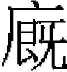

鎮海 粘合重山南合 牙剌洼赤馬思忽惕 劉敏王德真 楊惟中 孛魯歡也先不花 塔失蠻［一］ 按攤 阿榮 搠思監 忙哥撒兒伯答沙
鎮海，怯烈氏，或曰本田氏，至漠北始改爲怯烈氏。或曰當時同名者三人，以管屯田，故稱田鎮海云。鎮海以百户從太祖，同飲巴勒渚納水。與親王、大臣大會斡難河上，共上太祖尊號曰成吉思汗。太祖倚眷日密，授札魯忽赤。從征乃蠻，賜御馬。又從攻西遼，賜珍珠旂，佩金虎符，爲闍必赤。總屬官金符十人、銀符五十人，命屯田於阿魯歡之地，且城之，因名其地曰鎮海。
七年，從太祖伐金。師次撫州，與金將忽察虎戰，流矢中左脅，裹創復戰，竟拔其城，賜白金以旌之。燕京下，命鎮海登大悲閣，環射四箭，所至園廛邸舍，悉以賜之。
太祖崩，受顧命奉太宗踐阼，拜中書左丞相。後尚右，又改右丞相。凡中書省文書，行於西域、畏兀兒諸國者，用畏兀文，鎮海主之；行於中國及契丹、女真者，用漢文，耶律楚材主之。然仍於年月之前，鎮海書畏兀字曰付與某人，用相參驗。帝收天下符節，獨鎮海符節聽留。四年，偕速不台、塔察兒圍汴京，賜九龍旂、乘輿、椅、蓋。五年，破蔡州，以功賜恩州千户爲湯沐邑，世食其賦。先是，收天下童男女及工匠置局於弘州，既而得西域織金綺紋工三百户及汴京織毛褐工三百户，皆分隸弘州，命鎮海世掌之。太宗崩，六皇后稱制，素不喜鎮海，罷其官。定宗即位，復拜右丞相。定宗以寢疾不視事，事多決於鎮海與喀達克。卒，年八十四。
其後憲宗伐宋，常拊髀歎曰：「使吾有鎮海，何憂江南？惜其亡矣。」或曰憲宗即位，殺定宗用事大臣，鎮海、喀達克皆誅死，涖殺鎮海者爲丹尼世們。疑莫能詳也。
世祖即位，以鎮海舊部及降人千户爲貴赤，授其孫莊家千户，曾孫也里卜花百户，爲十七投下之一焉。
鎮海子十二人。知名者，曰要束木札魯忽赤，佩金符。曰孛古思，從世祖征雲南，率千人架浮橋於金沙江以濟師，以功授益州都等路宣慰使，賜金虎符、玉帶。中統二年，改東平路副達魯花赤，尋遷濟南等路宣慰使。至元二年，遷南京路達魯花赤，討平蘄縣賊。以病乞歸，授保定路達魯花赤，卒。曰闊里吉思，子八十八，僉河東廉訪司事；按攤不花，淮東廉訪副使。孫脱烈，靖州達魯花赤。
史臣曰：許有壬撰《鎮海碑》，稱鎮海卒於乙未八月。定宗元年丙午至憲宗元年辛亥，中無乙未。意者鎮海誅死，子孫諱其事，妄言卒年，而不悟其年事之不合也。
粘合重山，一名鈞，金女奚烈氏。初爲質子，知金亡，遂委質於太祖。授必闍赤，直宿衛，賜馬四百匹。從攻西夏，執大旗指麾將士，手中流矢不動。太宗即位，數侍内宴，因諫曰：「臣聞天子以天下爲憂，憂之則治，忘憂則亂。今置酒爲樂，此忘憂之術也。」帝深納之，以重山與史天澤、劉黑馬爲三萬户，統漢軍。三年，立中書省，拜重山爲左丞相。時耶律楚材爲中書令，帝委以國事，而以重山佐之。
七年，從皇子闊出伐宋，詔軍前行中書省事，許便宜從事。重山收降民三十餘萬。師還，復入中書視事，賜中

馬十匹、貫珠袍一襲。卒，贈太尉，追封魏國公，諡忠武。子南合。南合初爲江淮安撫使。十年，詔嗣其父行軍前中書省事。時大將察罕圍壽春，七日城始下，欲屠其城。南合曰：「不降者獨守將耳，其民何罪？」由是城人獲免。
初，世祖伐宋，南合進曰：「李璮受國厚恩，專制一方，然其人多詐，叛無日矣。」帝然之。中統元年，遷西京等處安撫使。已而立宣撫司，改西京路宣撫使。明年，拜中書左丞、中興等路行中書省事。三年，遷秦蜀五路行中書省事。是年，李璮反，帝使諭南合曰：「卿言猶在吾耳，璮果反矣。卿宜嚴防西邊。」南合奏曰：「臣謹受詔，不敢以西事累陛下。」至元元年，進中書平章政事。五年，卒。追封魏國公，諡宣昭。
子博温察兒，河中知府。孫世臣，同知京畿都漕運使。
牙剌洼赤，忽魯謨斯人。太祖征西域，皇子拙赤等下兀籠格赤，牙剌洼赤挈其二子馬俺木惕、馬思忽惕來降。從駕追札剌勒丁，中道取哥疾寧，留牙剌洼赤守之。西域略定，分置達魯花赤監治不合兒、薛米思堅、兀籠格赤、兀丹、乞思合兒、兀里羌、古先、答里勒等城，以太師耶律阿海總領之，命馬思忽惕同知其事。
牙剌洼赤從駕東歸，佐太宗定西域丁賦，授燕京行省札魯忽赤，斷漢民公事，且掌中原財賦。有西域商人奥都剌合蠻請撲買中原銀課二萬二千錠，以四萬錠爲額，太宗從之，以爲提領諸路課税所官。牙剌洼赤不以爲然。及六皇后稱制，益任奥都剌合蠻以財政，罷牙剌洼赤官，禍且不測。馬思忽惕在西域，聞之懼，亡命依親王拔都。其後奥都剌合蠻伏誅，定宗仍以牙剌洼赤管中原財賦，馬思忽惕治突厥斯單、薛米思堅等處財賦，並錫金獅符。
憲宗初立，太宗孫失烈門，定宗諸子忽察、腦忽等，合謀爲變。事覺，捕其從官，鞫問辭服，廷臣請窮治其獄。帝以初政，不欲多行殺戮，見牙剌洼赤立户外，呼入問之曰：「汝老成人，更事多，何獨無言？」對曰：「臣西域人也，請得言西域事。昔者希臘王阿來珊德已滅波斯，欲入印度，將領中多異議，令出不行。阿來珊德遣使詢於其傅阿里斯拓忒耳。使者致命，阿里斯拓忒耳無言，與使者至園中，遇樹之蔽礙者，令僕從芟伐，或竟拔其根株，易以新植。使者悟，歸報阿來珊德，乃誅諸不從令者，使人代將之，竟平印度而回。」帝聞是言，遂誅三王之黨預逆謀者凡七十人。仍命牙剌洼赤與不只兒等行尚書省事於燕京，管印造寶鈔，馬思忽惕與納懷、塔剌海充别失八里行尚書省事。其父子同被四朝寵遇如此。
中統時，阿里不哥僭號，與察阿歹後王阿魯忽交兵久之。阿里不哥使馬思忽惕往議和，阿魯忽以馬思忽惕治不合兒、薛米思堅等城財賦，軍用饒足，馬思忽惕遂留事察阿歹後王。其後八剌合謀攘旭烈兀後王呼拉珊之地，至元五年冬，遣馬思忽惕爲使，陽謂阿梅河左右之地，本屬公家，成吉思四子皆得分其歲賦，陰則探道路、詗軍事。馬思忽惕至，阿八哈大王厚禮之，贈以成吉思御服，出示歲計簿籍，明無餘財。馬思忽惕既得簿籍，不辭而去，來時沿途留騎以待，易馬疾馳，追者及諸河，已在舟中矣。及篤哇立，仍以馬思忽惕治呼拉珊財賦。馬思忽惕在西域前後五十餘年，所至府庫裕而民不擾，有善理財之名。
劉敏，字德柔，一字有功，宣德人。太祖七年，大軍次山西，敏年十二，從其父母避兵於德興禪房山，盡室被俘。敏隸於一大將麾下，一日御營犒宴，敏輒入坐共食。上見之，親問姓名，敏跪而自陳，並訴主將不見恤，無以自贍。上憐之，命改隸中宫。閲二年，能通諸部語，賜名玉出干，出入禁闥爲奉御。
十八年，授安撫使，便宜行事，兼燕京路徵收税課、漕運、鹽場、僧道、司天等事，給以西域工匠千餘户，及山東、山西兵，置二總管府。敏從子二人，佩金符，爲二府長，以敏總之，賜玉印，佩金虎符。敏奏佐吏宋元爲安撫副使，高逢辰爲安撫僉事，李臻爲參謀。契丹人在燕京，往往中夜挾弓矢掠民財，敏戮其渠魁。又豪家冒籍良民爲奴者衆，敏悉歸之。選習星曆者爲司天太史，興學校，進名士爲之師。
太宗即位，改造行宫幄殿。七年，城和林，建萬安宫，設宫闈司局，立驛傳以便貢輸，皆以敏董其役。既成，宴賜甚渥。十三年，授行尚書省，詔曰：「卿之所行，有司不得與聞。」俄而牙剌洼赤自西域回，奏與敏同治漢民，帝允之。牙剌洼赤素剛尚氣，恥不得自專，使其屬忙哥兒以流言誣敏，敏出手詔示之，乃已。帝聞之，命漢察火兒赤、中書左丞粘合重山、奉御李簡詰問得實，罷牙剌洼赤，令敏獨任。復辟李臻爲左右司郎中。臻在幕府二十年，參贊之力居多。
六皇后稱制，以敏與奥都剌合蠻同行省事，仍命與牙剌洼赤同管中原財賦。四年，請以子世亨自代，帝許之，賜世亨銀章，佩金虎符，賜名塔塔兒台。帝諭世亨有不從命者黜之。又賜其子世濟名散祝台，爲必闍赤，入宿衛。
帝伐宋，幸陝右，敏輿疾請見。帝曰：「卿有疾，不召而來，將有言乎？」敏曰：「臣聞天子出巡，義當扈從。但中原初定，勞師遠伐，恐非計也。」帝弗納。敏還，退居年豐。世祖南征，過年豐。敏入見，諭之曰：「我太祖勵精圖治，汝及見之。今汝春秋高，其彙次聖政以爲後世法。」未幾，以病歸於燕京。夏四月，卒。與敏同爲太祖奉御者，有王德真。
王德真，字濟準，隆興豐利人。九歲而孤。太祖敗金軍於野狐嶺，獲德真，愛其風骨，命後宫撫養之。稍長，通蒙古語，善於譯説。太祖以德真漢人，定官名爲奉御，與也速拜兒、塔布台、札固剌台三人同列，皆當時勳貴也。德真知無不言，或至夜分，猶敷陳於御榻之下。又命德真兼掌二皇后宫政，皇后撫之如子。從平西夏，太祖欲屠城，德真諫曰：「陛下一視同仁，非敵百姓也。」太祖説，遂赦之。
太宗即位，以先朝親舊，不欲勞以煩劇，賜金符，授德興人匠達魯花赤。四年，崔立以南京降，從速不台入南京。後除德興、燕京、太原人匠達魯花赤。中書令耶律楚材從容謂德真曰：「君佐命舊臣，宜入中書，相與同心輔政。」德真固辭。六皇后稱制，以德真爲西京等路廉訪使。世祖南征，又以德真爲平陽、太原等路廉訪使。皆不就。至元九年卒，年七十一。
楊惟中，字彦誠，弘州人。幼事太宗，知讀書，有膽略，太宗器之。奉命使西域，籍其户口而歸。皇子闊出伐宋，命惟中於軍前行中書省事，克宋棗陽、光化等軍，光、隨、郢、復等州，及襄陽、德安府，凡得知名士數十人，收伊、洛諸儒著述送燕京，立宋大儒周敦頤祠，建太極書院，延趙復、王粹講授其間，慨然欲以道濟天下。
太宗崩，乃馬真皇后稱制，惟中代耶律楚材爲中書令，以一相總庶務。
定宗即位，平陽路斷事官斜徹横恣不法，詔惟中宣慰，惟中按誅之。金將武仙餘黨散入太原、真定，據大明川，用金天興年號，衆至數萬。詔會諸道兵討之，不克。惟中仗節開諭，降其渠帥，餘黨悉平。
憲宗即位，世祖以太弟開府金蓮川，立河南道經略司於汴梁，奏惟中等爲使，俾屯田唐、鄧、申、裕、嵩、汝、蔡、息、亳、潁諸州。監河橋萬户劉福爲河南道總管，性貪酷，虐害遺民二十餘年。惟中至，召福聽約束，福稱疾不至。惟中設大挺於坐［二］，復召之，使謂曰：「汝不奉命，吾以軍法從事。」福不得已，以數十人擁衛見惟中，惟中即握大挺擊仆之。數日福死，河南大治。遷陝西四川宣撫使。時諸軍帥横侈病民，郭千户者尤甚，殺人之夫而奪其妻。惟中戮之以徇，關中肅然。語人曰：「吾非好殺。國家綱紀不立，致此輩賊害良民，無所控告。雖欲不殺，可乎？」
世祖伐宋，奏惟中爲江淮京湖南北路宣撫使，建行臺，蒙古、漢軍諸帥並聽節制。師還，卒於蔡州，年五十五。中統二年，追諡忠肅。
孛魯歡，怯烈氏。父昔剌斡忽勒，兄弟四人，長曰脱不花，次曰怯烈哥，季曰哈刺阿忽剌，俱隸王罕部下。王罕與太祖有隙，脱不花率其屬二百户來降，經雍古部，爲部長所留，居之忙兀魯地。脱不花遣其子要速特兒僞爲賈人，至太祖告其事。太祖使脱侖扯兒必往索之，雍古部長乃歸其兄弟於太祖。太祖問脱不花：「汝爲王罕何官？」對曰：「質子也。」乃使爲質子，宴享班大臣之列。從太祖征西域，賜畏兀兒户五百四十八。後從拖雷伐金，又從速不台征西域，從拔都征欽察。病卒。昔剌斡忽勒爲千户，早卒，孛魯歡其長子也。
幼事睿宗，爲護衛。定宗崩，與親王拔都擁立憲宗。即位之日，文臣以孛魯歡爲班首，掌宣發號令、朝覲、貢獻及内外聞奏諸事。二年，又以孛魯歡掌必闍赤寫發宣詔及諸色目官。賜真定之束鹿爲其食邑。憲宗崩於軍中，以序以賢，世祖當立，而先朝舊臣阿藍答兒等謀立阿里不哥，孛魯歡亦附之。至元元年，阿里不哥來降，帝令四親王、三大臣鞫其逆謀。阿里不哥曰：「孛魯歡、阿藍答兒二人勸我：先帝崩，兩兄將兵在外，我爲留守，應即大位。」帝乃誅孛魯歡等，釋阿里不哥不問。後贈推誠贊治功臣、儀同三司、太傅、昌國公，諡莊愍。孛魯歡四子：曰也先不花；曰木八剌，御史中丞；曰答失蠻；曰不花帖木兒，榮禄大夫，四川行省平章政事。
也先不花，初襲必闍赤長。裕宗封燕王，世祖命也先不花傅之，謂裕宗曰：「也先不花，吾舊臣子，端方明敏，閑習典故，汝可每事咨之。」
二十三年，拜雲南行省平章政事。阿郎、可馬丁諸種僰夷爲變，討平之。立登雲等路、府、州、縣，得户二十餘萬。
大德二年，遷湖廣行省平章政事。會河南妖賊事連湖廣平章劉國傑、右丞燕公楠，朝廷驛召二人。也先不花附奏，辨其虚誣，事得釋。先是，也先不花與二人不相能，當時咸稱爲長者云。八年，遷河南行省平章政事。河決落藜隄，也先不花督有司塞之，身先吏士，功立就。九年，進拜湖廣行省左丞相。至大二年，卒。天曆二年，贈推忠守正佐運翊戴功臣、太師、開府儀同三司、上柱國，追封恒陽王，諡文貞。
子五人：曰亦憐真，累拜湖廣行省左丞相，天曆二年贈推誠輔治宣化保德功臣、太傅、開府儀同三司、上柱國，追封武昌王，諡忠定；曰秃忽魯，累拜中書右丞相、御史大夫、太傅、録軍國重事，天曆二年贈懷忠秉義昭宣弼亮功臣、太師、開府儀同三司、上柱國，追封廣陽王，諡清獻；曰答思，湖南宣慰使；曰怯烈，中政使；曰按攤。
答失蠻，幼事世祖於潛邸，掌第一宿衛、奏記，兼監斡脱總管府。及即位，拜户部尚書，兼内八府宰相。凡馬湩、祭天、燔肉、告神諸典禮，皆答失蠻掌之。十八年，改總管府爲泉府司，旋爲丞相哈剌哈孫所奏罷。二十五年，答失蠻請復立泉府，帝從之。是年，乃顔叛，答失蠻扈駕親征，詔諸王以下以軍法便宜從事。乃顔平，哈丹又叛，詔答失蠻從皇孫討之。哈丹走高麗死，遷宣政院使。二十六年，海都寇北邊，又扈從世祖親征，至杭海，置西北驛傳而還。二十八年，拜榮禄大夫、泉府大卿。
元貞元年，海都復入寇。成宗召答失蠻曰：「卿名素重，非身往不可。」加銀青光禄大夫、平章軍國重事，發衛士千人從行。大德三年，兼翰林院學士承旨，領泉府司事。八年，卒，年五十七。贈推忠益國輔治功臣、開府儀同三司、太師、上柱國、高昌王，諡忠惠。
按攤，有至性，以孝聞。事成宗，襲爲必闍赤長。也先不花有疾，命給七乘傳，使省父於湖廣。未幾，拜海北海南道宣慰使、都元帥。海島生黎叛服不常，按攤素有聲威，生黎王高等二十餘洞，皆願輸租税如平民。至大二年，擢中書右丞、浙東道宣慰司都元帥。奔父喪，以哀毁卒。天曆二年，贈秉義效忠著節佐治功臣、太保、開府儀同三司、上柱國、中書左丞相，追封趙國公，諡貞孝。子阿榮。
阿榮，字存初。幼事武宗，直宿衛，累遷湖南道宣慰副使。歲饑，分廪禄爲粥，以食餓者。遷湖廣行省左右司郎中，入僉會福院事，尋除吏部尚書。泰定初，出爲湖南道宣慰使，旋改浙東道宣慰使都元帥，以疾辭。天曆初，起爲吏部尚書、參議中書省事。二年，拜中書參知政事，知經筵事。進奎章閣大學士、榮禄大夫、太禧宗禋院使、都典制神御院事。久之，謁告歸。至元元年，卒。
阿榮精數學，逆推事成敗及人禍福，多奇中。天曆三年，廷試進士，阿榮與虞集會於直廬，語集曰：「更一科後，貢舉當輟。輟兩科而復，則人材大出矣。」又曰：「君猶及見之，榮則不及矣。」後三年，卒。元統三年，科舉罷，至正元年始復，如其言。
搠思監，亦憐真之子也。早歲性寬厚，寡言語，皆以遠大許之。泰定初，襲長宿衛，爲必闍赤怯薛官。至順二年，除内八府宰相。元統初，出爲福建宣慰使都元帥。後至元三年，拜江浙行中書省參知政事，是歲督海運漕米三百餘萬石，悉達京師，無耗折。六年，遷湖北道肅政廉訪使，未行，改江浙行省右丞。福建鹽法久壞，詔搠思監往究其私鬻、盜鬻及出納之弊，至則悉廉得其利病，爲罷行之。
至正元年，改山東肅政廉訪使，尋召拜中政使。明年正月，除陝西行臺御史中丞。三月，復爲中政使。八月，調太府卿。四年，拜中書參知政事，尋遷右丞。六年，遷御史中丞，除翰林學士承旨，俄復爲中丞，又由資政使遷宣徽使。九年，除大宗正府也可札魯忽赤［三］，尋復入中書爲右丞。十年，遷平章政事，階光禄大夫。十一年，拜御史大夫，進銀青榮禄大夫。十二年，復爲中書平章政事，從丞相脱脱平徐州有功。十三年，拜御史大夫，尋又爲中書平章政事。
十四年九月，奉命討賊淮南，身先士卒，面中流矢，不爲動。十五年，遷陝西行省平章政事，召拜知樞密院事。俄復拜中書平章政事，兼大司農分司，提調大都留守司及屯田事。一日入侍，帝見其面有箭瘢，深歎閔之，進爲首平章。十六年，復遷御史大夫。四月，拜中書左丞相。明年三月，進右丞相。十八年，加太保，詔封其曾祖孛羅歡爲雲王，祖也先不花爲瀛王，父亦憐真爲冀王。
搠思監居相位久，無所匡救，又公受賄賂，物議喧然。是年冬，監察御史燕赤不花劾搠思監任用私人朵列及妾弟崔完者帖木兒印造僞鈔，事將敗，令朵列自殺以滅口。搠思監乃請解機務，詔止收其印綬。而御史答里麻失里、王彝言不已，帝終不聽。會遼陽賊勢張甚，明年，起爲遼陽行省左丞相，未行，二十年三月，復拜中書右丞相，仍詔諭天下。
時宦者資正院使朴不花乘間用事爲姦利，搠思監與朴不花相表裏，四方警報壅不上聞。孛羅帖木兒、擴廓帖木兒各擁强兵於外，以權勢相軋，搠思監與朴不花黨於擴廓帖木兒，誣孛羅帖木兒以不軌。二十四年三月，下詔削其官爵，且命擴廓帖木兒討之。宗王不顔帖木兒、秃堅帖木兒等皆稱兵與孛羅帖木兒合，上表言其無罪，京師震恐。帝乃竄搠思監於嶺北，朴不花於甘肅，悉復孛羅帖木兒等官爵，然詔書雖下，而搠思監、朴不花仍留京師。
四月，孛羅帖木兒遣秃堅帖木兒稱兵犯闕，必得搠思監、朴不花乃已。帝不得已，縛二人畀之，皆爲孛羅帖木兒所殺。搠思監始至，孛羅帖木兒釋其縛，厚禮之。逾三日，方詰其濁亂天下之罪，又笑謂搠思監曰：「前賂汝七寶數珠一串，宜見還。」搠思監使取似此者六串至，孛羅帖木兒視之，皆非也，因怒曰：「宰相貪婪如此，我安能不正其罰！」遂殺之。已而御史復奏：「搠思監矯詔殺丞相太平，盜用鈔板，私家草詔，任情黜陟，鬻獄賣官，費耗庫藏，使天下八省之地悉致淪陷，乃誤國之奸臣，究其罪惡，大赦難原。曩者姦臣阿合馬之死，剖棺戮尸。搠思監之罪，視阿合馬尤甚。今雖死，必宜剖棺戮尸，以洩衆憤。」詔從之。而臺臣言猶不已，遂没其家産，竄其子宣徽使觀音奴於遠方。
怯烈氏四世爲丞相者八人，至搠思監竟隳其世業焉。
史臣曰：孛羅帖木兒跋扈，搠思監不量力而討之，使喋血京師，幽皇后，殺宰相，身既不免，國亦幾亡。是故激孛羅帖木兒以成其悖逆者，搠思監之罪也。然其人庸懦，劾者方之阿合馬，則過矣。
忙哥撒兒，札剌兒氏。曾祖赤剌温孩亦赤、祖搠阿，並事太祖。搠阿精騎射，太祖愛之，號爲蔑兒干。嘗與賊遇，將戰，有二飛鶩至，命搠阿射之。請曰：「射其雄者？抑雌者？」太祖曰：「雄者。」搠阿一發墮之。賊望見，驚曰：「是善射若此，飛鳥且不能逃，况人乎？」不戰而去。
太祖征蔑兒乞，兵潰，搠阿與其弟左右力戰以衛太祖。會者勒蔑來援，賊乃引退。搠阿生那海，那海生忙哥撒兒。太宗平金，念那海世勳，賜食洛陽百七十五户。
忙哥撒兒事拖雷，恭謹過其父，定宗以爲札魯忽赤。憲宗在藩邸，深知之。從征斡羅思、阿速、乞卜察克諸部，常身先諸將，及頒賞，則退然一無所取。憲宗益重之，使治藩邸分民。間出遊獵，則命爲軍長，動如紀律。雖太后及諸嬪妃小有過失，知無不言，邸中人敬憚之。廼授爲也客札魯忽赤，義謂大斷事官。
既拜命，出帳殿外，欹橐坐熊席，其僚列坐左右者四十人。忙哥撒兒問曰：「王以我長此官，諸公謂我當用何道以稱職？」衆皆默然。又問，有夏人和斡居下坐，進曰：「夫札魯忽赤之道，猶宰之刲羊也，解肩者不使傷其脊，在持平而已。」忙哥撒兒聞之，即起入帳内。衆不知所爲，皆咎和斡失言。既入，乃爲憲宗言之。憲宗召和斡，命之步，曰：「可用材也！」和斡由是知名。
定宗崩，親王拔都大會宗親，議立憲宗。畏兀八剌曰：「失烈門，皇孫也，太宗嘗言其可以君天下。」時諸大臣聞八剌言，皆默然。忙哥撒兒獨曰：「汝言誠是，然乃馬真可敦立定宗時，汝何不言耶？拔都汗固亦遵太宗遺言者，有異議，吾請斬之。」衆莫敢支吾，憲宗之位始定。
已而察合台後王燕只吉歹二子與失烈門、忽察、腦忽三王欲乘大會燕飲作亂，刳車轅，藏兵器其中，以至在道轅折，兵器見，御者克薛傑上變，忙哥撒兒即發兵拒之。忽察等不虞事遽覺，倉卒不能戰，好言赴會。憲宗付忙哥撒兒鞫治，忙哥撒兒悉誅之。憲宗以其奉法不阿，委任益專。當刑者，輒以法處決，然後上聞。或卧未起，忙哥撒兒直造金帳前，敂箭房，帝問何言，即可其奏。嘗以所御大帳行扇賜之。
三年秋，授萬户。冬，病酒卒。
帝以忙哥撒兒當國時多所誅戮，及是咸騰謗言，迺爲詔諭其子脱歡、脱兒赤曰：
汝高祖赤剌温孩亦赤，暨汝曾祖搠阿，事我成吉思皇帝，皆著勞績，惟朕皇祖實嘉賴之。汝父忙哥撒兒，自其幼時事我太宗，朝夕忠勤，罔有過咎。從我皇考，經營四力。逮事皇妣及朕兄弟，亦罔有過咎。暨朕討定斡羅思、阿速、隱兒别里、乞卜察克之域，濟大川，造方舟，伐山通道，攻城野戰，功多於諸將。大賚有績，則退然無欲得之心，惟朕言是用。修我邦憲，治我蒐田，輯我國家，罔不咸乂，惟厥忠。雖其私親，與朕嬪御小有過咎，無有比私。故朕皇妣迨朕昆弟，無不嘉賴。朝之老臣、宿衛耆舊，無不嚴畏。録其勤勞，命爲札魯忽赤，迨朕皇考受民，布昭大公，以辨獄慎民，爰作朕股肱耳目，衆無譁言，朕聽以安。自時厥後，察合台阿合之孫，太宗之裔，定宗、闊出之子，及其人民，越有他志。賴天之靈，時則有克薛傑者，以告於朕。汝父肅將大旅，以遏亂略，額勒只吉歹等謀是用潰，悉就拘執。朕取有辜者，使辨治之，汝父體朕之心。其刑其宥，克比於法。又使治也速蒙哥、不里獄，亦克比於法。惟爾脱歡、脱兒赤，自朕用汝父，用法不阿，兄弟親婣，咸麗於憲。今衆罔不怨，曰：「爾亦有死耶？」若有慊志。人則雖無死，朕將寵之如生。肆朕訓汝，爾克明聽朕言，如是而有福，不如是而有禍。惟天惟君，能禍福人；惟天惟君，是敬是畏。立身正直，制行貞潔，是汝之福，反是勿思也。能用朕言，則不墜汝父之道，人亦不能間汝矣。不用朕言，則人將仇汝、伺汝、間汝。怨汝父者，必曰：「汝亦與我夷矣！」汝則殆哉！汝於朕言，弗慎繹之，汝則有咎；克慎繹之，人將敬汝、畏汝，無間伺汝，無慢汝怨汝者矣。又汝母汝婦，有讒欺巧佞構亂之言，慎勿聽之，則盡善矣。
至順四年，追封忙哥撒兒兖國公。四子：曰脱歡，萬户；曰脱兒赤，脱兒赤子明里帖木兒，翰林學士承旨；曰也先帖木兒；曰帖木兒不花。
帖木兒不花子伯答沙，幼英敏端重，長入宿衛，歷事成宗、武宗，官宣徽院使。成宗崩，護梓宫北葬，守陵三年乃還。
延祐四年，拜中書右丞相。時承平日久，朝廷清明，百姓乂安，號稱極治。
仁宗崩，鐵木迭兒專政，改集賢大學士。未幾，以大宗正札魯忽赤出鎮北方。泰定間，還朝。
天曆初，上都兵潰，伯答沙奉璽紱來上，拜太傅，仍札魯忽赤。卒，貧無以爲殮，人稱其廉。追封威平王。
三子：曰馬馬的因，曰潑皮，曰八郎。八郎期而孤，母乞要歹氏年二十守志不它適。八郎後亦爲大宗正札魯忽赤。
史臣曰：鎮海、粘合重山、楊惟中，俱非宰相之才。牙剌洼赤導憲宗以殺戮，忙哥撒兒又以酷濟之，蓋長君之惡者。孛魯歡擁戴阿里不哥，蒙古之家法如此，死非其罪，宜其有後也。
【校勘記】
［一］「塔失蠻」，正文作「答失蠻」。
［二］「挺」，《元史》卷一三六列傳第三十三《耶律楚材傳》附《楊惟中傳》同。邵遠平《元史類編》卷一一、錢大昕《廿二史考異》卷八六作「梃」。下同。
［三］「大宗正府」，「正」原作「政」，據本書卷五七《百官志三》、《元史》卷八七志第三十七《百官三》改。
本章完!